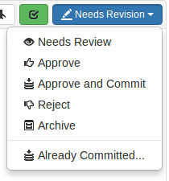
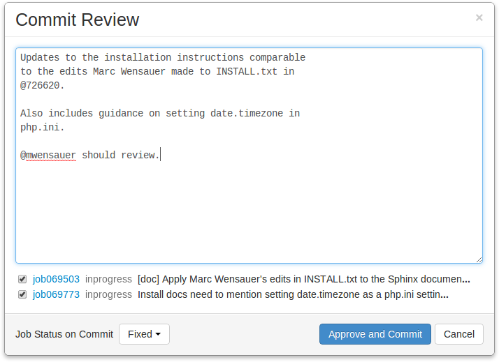
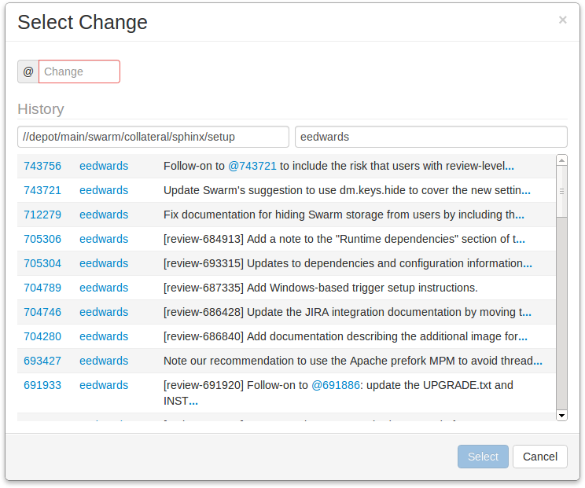
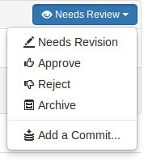

States
Reviews can be in one of several states. The biggest differentiator is whether the review's files have any outstanding, uncommitted changes or not.
Whenever a review's state changes, an email notification is sent to all review participants, including the author, anyone who comments on the review or its files, anyone who has changed the review's state previously, and anyone who is @mentioned in the review's description or comments.
 Code reviews can be in one of the following states:
- Needs review
-
The review has started and the changes need to be reviewed.
- Needs revisions
-
The changes have been reviewed and the reviewer has indicated that further revisions are required.
- Approved
-
The review has completed. The changes need to be committed. See the note about modified reviews.
- Rejected
-
The review has completed. The changes are undesirable and should not be committed.
- Archived
-
The review has completed for now. However, it is neither rejected nor approved; it is simply put aside in case it is needed in the future.
Note
By default, when an Approved review is committed or updated, Swarm changes the state to Needs Review if the files have been modified since the review was approved. Files are considered modified if the list of involved files changes, or if the file content or file-type changes.
If one or more files in a review has the filetype +k
(ktext), this behavior is undesirable because the files
will appear to be modified when the Helix Versioning Engine replaces RCS
keywords with their current values. See
Unapprove modified reviews to see how to disable this
behavior.
Self-approval by review authors
By default, review authors can approve their own reviews. This behavior is based on Swarm's advisory nature.
Self-approval by authors can be prohibited on a project-by-project basis by specifying moderators for project branches (see the next section). However, authors who are moderators can self-approve their own reviews.
Administrators can configure Swarm to prevent all self-approval by review authors. See Disable self-approval of reviews by authors for details.
State change restrictions with moderation
Typically, any authenticated user can change the state of a review (remember that the review state is merely advisory in most cases). When the Only Moderators can approve or reject reviews restriction is enabled for a project branch, and one or more moderators have been assigned to that branch (see Add a project for details), that branch is moderated. Changing the state of any review associated with a moderated branch is restricted as follows:
-
Only moderators can approve or reject the review. Moderators can also transition a review to any other state.
-
The review's author, when she is not a moderator, can change the review's state to Needs Review, Needs Revision, Archived, and can attach committed changelists.
Normally, the review's author cannot change the review's state to Approved or Rejected on moderated branches. However, authors that are also moderators have moderator privileges, and may approve or reject their own review.
When
disable_self_approveis enabled, authors who are moderators (or even users with admin privileges) cannot approve their own reviews. -
Project members can change the review's state to Needs Review or Needs Revision, and can attach committed changelists. Project members cannot change the review's state to Approved, Rejected, or Archived.
-
Users that are not project members, moderators, or the review's author cannot transition the review's state.
-
For the review's author and project members, if a review is not in one of their permitted states, for example if the review's state is Rejected, they cannot transition the review to another state.
These restrictions have no effect on who can start a review.
Required reviewers
Reviews can optionally have required reviewers. When a review has required reviewers, the review cannot be Approved until all required reviewers have up-voted the review. If the review is associated with a project that has assigned moderators, even the moderators cannot approve the review without up-votes from all required reviewers (but they can reject the review).
Required reviewers are expected to take greater care while performing a review than non-required reviewers, as their votes affect whether a review can be approved or not.
To edit the reviewers for a review, and to change whether a reviewer is required or not, see Edit reviewers.
State actions
The drop-down menu provides two special actions included with the state change for uncommitted reviews:
- Approve and Commit
-
When selected, a dialog appears allowing you to update the description, select which jobs should be associated, and specify the job status upon commit. When you click the button, the review becomes approved and its associated files are committed. By default, Swarm's activity stream entries and email notifications note that you committed the review on behalf of the review's author. This can be configured to credit only the committer, see Commit credit for details.

Note
This option can be removed by an administrator. See Disable commit for details.
By default, if the committer is not the review's author, Swarm credits both users. If you prefer to credit only the committer, see Commit credit for details.
- Already Committed...
-
Sometimes, a changelist that a review is based upon gets committed without the review being updated. In such a situation, selecting displays a dialog presenting a list of candidate changelists:

Specify the changelist, if you know it, or browse the recent changes to locate the submitted change. The first field under History allows you to filter changes by depot path. The second field allows you to filter changes by userid. Click a changelist to select it, and then click to associate the changelist with the review and complete the review. Or, just double-click a changelist to do the same.
 When a review has been committed, sometimes a follow-up change needs to be associated with the review. For committed reviews, the drop-down menu provides the entry in place of . Select to use the Select Change dialog as described above.